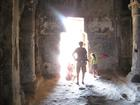

All my worldly posessions, stuffed into a 5'x10' storage locker

July 18 2010
Ok not quite everything. My car and bike aren't in there, but nearly everything else is.
Budapest - briefly

July 26 2010
I'm writing this from a rather pleasant airport hotel next to Budapest airport. Budapest isn't a proper stop on my trip, but it seemed the ...
Hungary continued


July 27 2010
I have lived in the UK for 27 years without ever seeing a car accident. I have lived in the US for four years without ...
Sarajevo - part 1


July 27 2010
Sarajevo is a fascinating city. In some ways it seems like any other European city, but then you notice the bullet holes, or the UN ...
Sarajevo part 2


July 28 2010
I got a bit of push-back about my use of the word "normal" in my previous post, so I think I should elaborate.
The train from Sarajevo to Belgrade
July 29 2010
I'm writing this from a hostel in Belgrade, having spent nearly all of the previous day getting here by train.
Belgrade


July 31 2010
Geographically, Belgrade is rather like Pittsburg. It was built around a fortress that was built at the meeting point of two rivers - in this ...
The train to Transylvania

July 31 2010
When the weather is hot, the Belgrade locals like to go swimming at in a section of the Sava (pronounced Saba) river that has been ...
Timisoara - Rob goes to Church


August 1 2010
Timisoara is a small city in Transylvania, near to the border with Serbia. It is a university town and it famous for being the place ...
Sibiu - Surprisingly German


August 2 2010
I spent this morning exploring Sibiu before taking the train to Sighisoara in the afternoon.
Sighisoara - birthplace of Dracular


August 2 2010
Sighisoara is celebrated as the birthplace of Vlad Tepes, aka Vlad the impaler, who acquired the name "Dracul" meaning dragon. Sighusoara is also a well preserved ...
Brasov + Rob jumps out of a moving train


August 3 2010
Romanian trains can be frustratingly slow. While the fastest sections of the track can be up to 50mph, the trains often go only 30mph or ...
Bears!!


August 4 2010
Brasov is one of the few cities in the world where bears roam the streets at night. The Transylvanian forest runs right up to residential ...
Bran Castle


August 4 2010
Sometimes it feels like Transylvania is putting a special performance just for me. That is how it felt when, just as I crossed the gate ...
Bucharest with Cristina


August 6 2010
It is always more fun to be shown around a city by a local. Yesterday I was fortunate enough to be shown around Bucharest by ...
Bulgaria : Rusee, Varna, and "Sunny Beach"


August 7 2010
I came to Bulgaria in order to meet up with my Russian friend Yuri, who I last saw in person 16 years ago, when we ...
Chilling with Yuri and his family

August 9 2010
16 years ago, back in 1994, I took part in an exchange program with a school in Moscow. We hosted Yuri for two weeks and ...
Bus to Istanbul and Istanbul


August 9 2010
I'm sure there are some people who like watching loud Turkish gameshows during an overnight bus, but I would rather sleep. This particular gameshows seemed ...
Ephesus and the Temple of Artemus


August 11 2010
Ephesus is regarded as the second best preserved ancient city in the world (after pompey). In addition to being an important Greek and later Roman ...
Stuff near Ephesus


August 13 2010
I spent yesterday exploring various other sites around Ephesus. The Basilica of St John is a ruined church built on the site where St John ...
A balloon ride

August 16 2010
This was my first ever ride in a hot air balloon and I'm glad I did it. It is a sensation quite unlike any other ...
Star wars meets Indiana Jones
August 16 2010
The monastry was featured in the recent start wars films as being anakin skywalker's home. Inside, it is like a child's hide and seek paradise ...

Ankara and the flight to Iran


August 18 2010
I spent yesterday visiting Ankara and then I flew to Tehran, where I am now.
Tehran


August 18 2010
Iran is in the news so often, is described in such conflicting ways, and had so rich a history that I felt I had to ...
Why Iran hates America


August 19 2010
I spent much of today inside an Iranian prison. Fortunately it is a former prison that has now been turned into a museum about the ...
Azardi tower and Darband - Friday


August 22 2010
I was worried that a lot of things would be closed on a Friday in Ramadan and so planned an itinerary that could be done ...


Esfahan


August 25 2010
The people of Esfahan claim that their city is one of the most beautiful places in the world. Having spent two days there, it is ...
Yazd and the Zoroastrians


August 26 2010
Yazd is a mud brick city in the middle of a hot dry desert.
Around Yazd


August 26 2010
You can do a lot more with mud than one might think. Today we visited a five storey fortress built entirely out of mud. It ...
Persepolis


August 28 2010
Persepolis is Persia's archaeological jewel. It was started by Darius I in 518BC and was extended by Xerces and his successors before eventually being destroyed ...
Yazd: Talking to the locals


August 28 2010
It is fairly common for the more modern Iranian women to approach me and strike up a conversation, but the more conservative, chador clad girls ...


Leaving Iran - taking the gloves off


September 2 2010
Some of you may have noticed that my blog posts from Iran have been quite soft on the Iranian government. This isn't because I think ...
Amman


September 2 2010
Since one cannot fly directly from Iran to Israel, I decided to make a brief stop in Jordan. I was also keen to see Petra.
Petra


September 2 2010
Petra is spectacular. While it may not be as architecturally intricate or historically interesting as somewhere like Ephesus or Pompei, the setting, and the way ...
Scuba Diving in the Red Sea


September 3 2010
On Thursday I crossed the border into Israel, went SCUBA diving in the red sea, and then took the bus to Jerusalem.
Jerusalem


September 3 2010
The old city of Jerusalem has to be one of the weirdest places in the world. Wandering the streets, it feels like I'm attending a ...
Bethlehem and Hebron


September 5 2010
On the Sabbath a lot of Jewish stuff is closed, so this seemed the perfect day to visit the occupied west bank.
Rock, Sepulchre and Dead Sea


September 6 2010
The Dome of the rock is closed to non Muslims, but infidels are occasionally allowed to walk through the outer courtyard. There is clearly a ...
The Holocaust Museum


September 8 2010
I spent Monday visiting the Holocaust Museum in Jerusalem. As one might expect given it's location it is by far the biggest, best, and most ...
Ariel - capital of the settlements


September 8 2010
Ariel is one of the largest settlements in the occupied West Bank. My friend Shelly had suggested that I visit it to get a more ...
Tel Aviv and a synagogue


September 9 2010
Tel Aviv is a great city set along the Mediterranean coast. The beaches have soft sand, warm water, waves you can bodyboard on, and bars ...
The Golan Heights, Haifa, and Galilee


September 11 2010
The Golan heights is a mountainous region on the border with Syria and Lebanon. Golan is most famous for being the site of battles between ...
The Jenin Refugee Camp


September 11 2010
It was September 11th. Clearly I needed to go talk to some terrorists.
Thoughts on Judaism and Israel

September 15 2010
Since I've now left Israel, I thought this might be a good time to write down some of the thoughts I've been having about Judaism ...
Egypt: Cairo and Luxor


September 17 2010
I can't say I wasn't warned about Egypt. Travellers love to share stories about the different places they gave been to and one consistent theme ...
Leaving Egypt


September 21 2010
My previous post about Egypt may have been a little too harsh. At the time I wrote it, the only places I had been to ...
Addis Ababa


September 21 2010
Like many westerners, my image of Ethiopia was formed by the Live Aid famines. It thus felt a little weird to arrive in a city ...
The Bus to Bahir Dar


September 21 2010
It isn't often that a ten hour bus journey turns out to be one of the highlights of a trip, however Ethiopia is no normal ...
Lake Tana Monasteries


September 28 2010
Beauty can get you a long way in life. If a pigeon or a seagull had jumped onto my plate and started eating my toast ...
Gondar Castles


September 28 2010
Gondar is a former capital of Ethiopia and is famous for its castles. The royal compound contains six castles, built at various points during the ...
Why is Ethiopia Poor?

September 28 2010
At lunch I met a group of Westerners who worked for a local NGO. I asked then why they thought Ethiopia, and Africa in general, ...
Arriving at Aksum - Raiders of the lost Wifi

September 28 2010
Aksum, also known as Axom is a former capital of Ethiopia. It is famous for its rock carved stellae and for allegedly being the home ...
The Bus to Shire


September 28 2010
My original plan had been to spend a few days trekking through the wilds of the Simien mountains, but sadly I ended up chickening out. ...
An Ethiopian Jewish Village


September 28 2010
Ethiopia seems a strange place to find a Jewish community, and indeed it is quite a strange Jewish community. The Falashas claim to have been ...
The Ark of the Covenant?

September 28 2010
The Ethiopian Orthodox Church fervently believes that the Ark of the Covenant, the holiest object in the ancient Jewish temple and first love of Indiana ...
Aksum


September 28 2010
Aksum is an ancient city, probably founded some time around 400BC. Back then, the land that is now Ethiopia was ruled by the Sabaens, a semitic people ...
Meskel


September 28 2010
I timed my visit to Aksum to coincide with Meskel, a religious festival at which people celebrate the "discovery of the true cross". Supposedly a ...
Debre Damo and Yeha


September 28 2010
To round off my visit to Aksum, I hired a 4WD plus guide and driver and got them to take me to Debra Damp and ...
The Dorze


October 5 2010
Ethiopia is a country where some things are very cheap but other things are very expensive. I stayed in one of the nicest hotels in ...
The Konso


October 5 2010
In the morning we visited a Konso village. The Konso live at the tops of the local hills and their villages are well fortified to ...
The Banna and Tsami


October 5 2010
It isn't just San Francisco where men wear miniskirts. If you are a Banna tribesman then a miniskirt is considered the height of masculinity. We ...
The Mursi


October 5 2010
The Mursi are regarded as being one of the weirdest of all the tribes in Africa. Even the people from the other Omo tribes think ...
Lower Omo Wildlife


October 5 2010
One advantage of travelling through the Lower Omo at around dawn is that we got to see some of the wildlife that inhabits the area. ...
Crocodiles and Hippos


October 5 2010
Lake Chamo is a rift valley lake that is famous for its crocodiles and hippos. I rented a small boat (including driver) to take me ...
South Africa: Johannesburg


October 11 2010
Johannesburg is a weird place. Sometimes it feels a lot like England. People drive on the left. The non-Afrikaans white accent is almost indistinguishable from ...
Walking around downtown Joburg


October 11 2010
I spent a day walking around downtown Johannesburg. I had received very mixed advice about the safety of doing this. One white person told me ...
Lion cubs are awesome


October 11 2010
Do you love kittens, but wish they were a bit larger and more huggable? If so then you'll love lion cubs. Lion Park in Johannesburg ...
Botswana and a Cheetah


October 11 2010
Botswana is a really nice place. If one expects all of Africa to be poverty, danger, and disorder, then Botswana is a very pleasant surprise. ...
Mozambique : Maputo


October 13 2010
The first thing one notices about Mozambique is how dirty it is. There is rubbish strewn everywhere, the pavement is carpeted with broken glass, and ...
Cage-Diving with Great White Sharks


October 13 2010
Yesterday was probably my safest day in South Africa. I went cage-diving with Great White Sharks. Gansbaai is about two hours drive from Cape Town ...
Cape Town


October 21 2010
People often compare Cape Town to San Francisco. Both are the big city on the west coast, are more relaxed than their eastern neighbour, are ...
Driving the Cape


October 21 2010
Where San Francisco has the route one costal highway, Cape Town has the Garden Route, which winds across mountains and beautiful coastline though several cute ...
Drinking with the Boers

October 21 2010
If you want to know what people really think, it is often best to talk to them when they are drunk. This was my noble ...
Cango Caves


October 21 2010
Cango caves are arguably the most impressive caves in Africa (or at least the guide said they were). The caves consist of a series of ...
Swimming with Sharks


October 21 2010
I'd already been cage diving with great white sharks, but having the cage there had made it rather impersonal. Fortunately the Cape Town Aquarium allows ...
Robben Island


October 21 2010
Robben island is as island prison just off Cape town that is most famous for being the prison where Nelson Mandela and other ANC leaders ...
Epilogue

October 25 2010
My trip is now over. I'm now back in the San Francisco Bay Area, starting my new job at Google. It seems appropriate to give ...